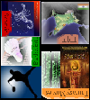

 cs.tamu.edu, 979.458.2818
cs.tamu.edu, 979.458.2818
My research interests are in Machine Learning, Pattern Recognition, Focus+Context techniques & User Interfaces. I am currently working on semantic clustering of information elements in combinFormation. We're going to iteratively improve our clustering mechanism, by defining sharper similarity / distance metrics between information elements, and trying different clustering algorithms. Some of these distance metrics include term-vector cosines (term-vectors derived from information element metadata) and container information. Other big challenges include presentation of these information clusters, designing intuitive interface metaphors for visually encoding relationships between clusters and elements within a cluster, and interest expression on the same.